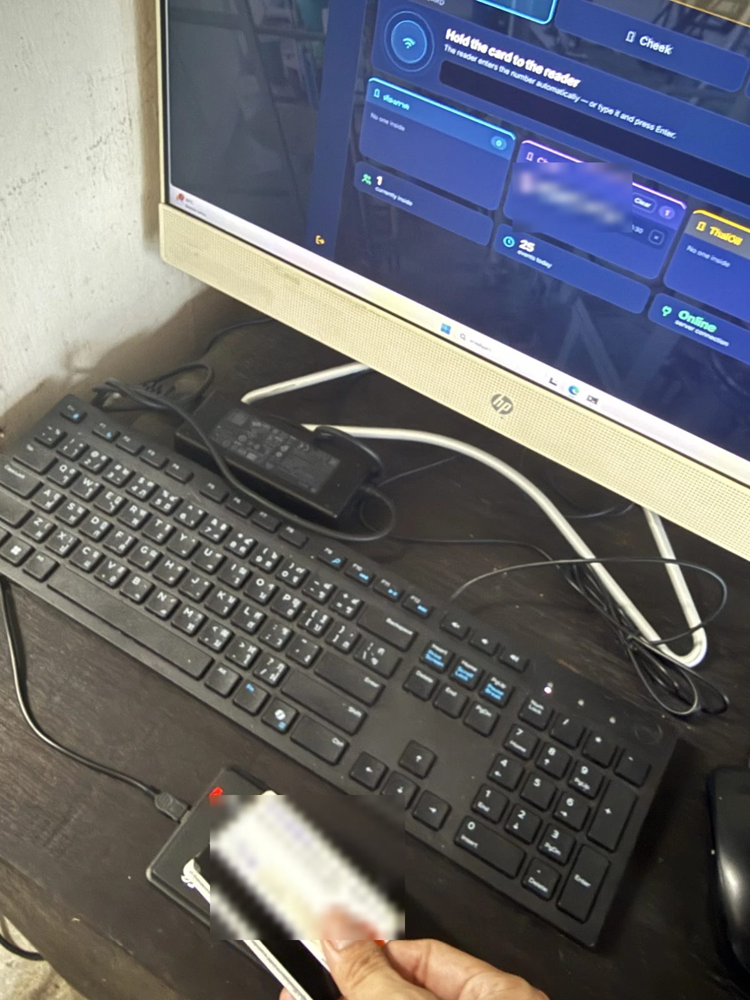
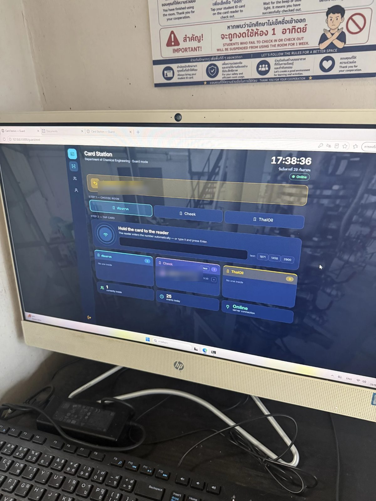
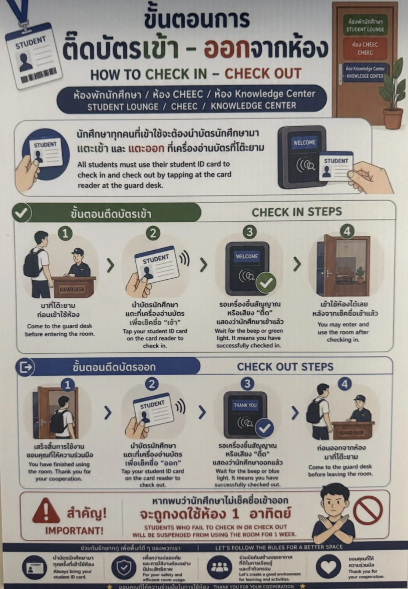

Dept. of Chemical Engineering, KMUTT · 2026
Room-access card station
Students used to sign a paper logbook to use three department rooms: the student lounge, CHEEC and the Knowledge Center. Now they tap their student card, the guard sees who is inside each room, and the office can look up any day's activity. It covers 400 students and staff and has been in daily use since September 2026.
My part
- Tested the card readers on site and troubleshot the hardware until scans came through reliably, about 50 a day.
- Set the system up on the department's local network, so the guard's PC and the office PC share one database.
- Trained the security guards and office staff, and made a one-page Thai/English guide that is posted at the guard desk.
The software was written with AI-assisted coding (Claude Code). What I brought was knowing what the guards and office actually needed, and getting it working in the real building with real people.
How it works
One small server keeps a log of every tap in and out. Who is inside right now is worked out from that log instead of being stored separately, so the guard's screen and the office's screen can never disagree. Cards expire automatically four years after registration.
On site



Students' names and ID numbers in these photos are blurred.
Try it yourself
These are the real pages from the system, running in your browser. Every student, ID and card number in the demo is made up, and nothing is sent anywhere.
- Open the guard station, pick a room, then click one of the test cards (for example 0101) to check a student in.
- Click the same card again to check them out, or type 9999 and press Enter to see an unregistered card.
- Open the office station to see the tap in today's activity, the calendar heatmap and the card registry.